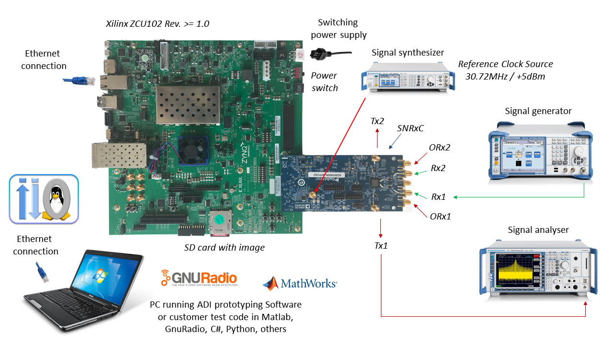
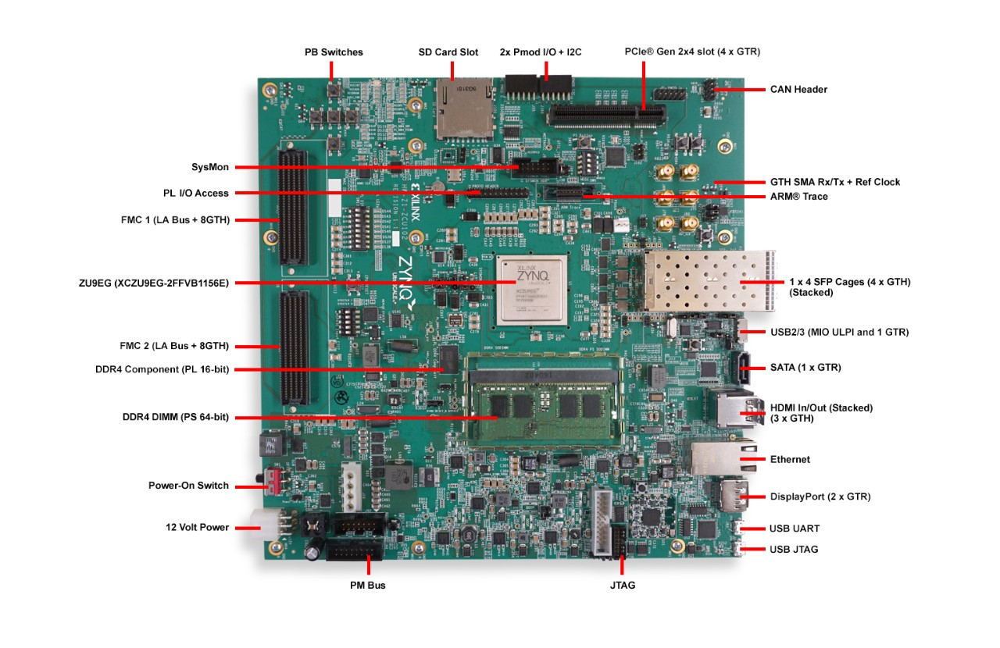

ZCU102 Quickstart
{kind=link}
This guide provides some quick instructions on how to setup the ADRV9009-W/PCBZ on:
Instructions on how to build the ZynqMP / MPSoC Linux kernel and devicetrees from source can be found here:
Required Software
SD Card 8GB imaged with Kuiper Linux (see SD card flashing)
A UART terminal (Putty/Tera Term/Minicom, etc.), Baud rate 115200 (8N1).
Required Hardware
AMD Xilinx ZCU102 Rev 1.0 board
ADRV9009-W/PCBZ FMC board.
Reference clock source
Micro-USB cable
Ethernet cable
Optionally USB keyboard mouse and a Display Port compatible monitor
Testing
{kind=link}
Connect the ADRV9009-W/PCBZ FMC board to the FPGA carrier HPC1 FMC1 socket.
On the ADRV9009 FMC card, provide a 30.72MHz clock source, at a +5dBm power level to J401 connector. (This signal drives the reference clock into the AD9528 clock generation chip on the board – the REFA/REFA_N pins of AD9528 generates the DEV_CLK for the Talise and REF_CLK for the FPGA on the ZYNQ platform).
Connect USB UART J83 (Micro USB) to your host PC.
Insert SD card into socket.
Configure ZCU102 for SD BOOT (mode SW6[4:1] switch in the position OFF,OFF,OFF,ON as seen in the below picture).
Turn on the power switch on the FPGA board.
Observe kernel and serial console messages on your terminal. (use the first ttyUSB or COM port registered)
{kind=link}
All the products described on this page include ESD (electrostatic discharge) sensitive devices. Electrostatic charges as high as 4000V readily accumulate on the human body or test equipment and can discharge without detection. Although the boards feature ESD protection circuitry, permanent damage may occur on devices subjected to high-energy electrostatic discharges. Therefore, proper ESD precautions are recommended to avoid performance degradation or loss of functionality. This includes removing static charge on external equipment, cables, or antennas before connecting to the device.
Console Output
Xilinx Zynq MP First Stage Boot Loader
Release 2017.4 May 11 2018 - 15:08:48
NOTICE: ATF running on XCZU9EG/silicon v4/RTL5.1 at 0xfffea000, with PMU firmware
NOTICE: BL31: Secure code at 0x0
NOTICE: BL31: Non secure code at 0x8000000
NOTICE: BL31: v1.3(release):47af34b
NOTICE: BL31: Built : 15:08:13, May 11 2018
PMUFW: v0.3
U-Boot 2017.01 (May 02 2018 - 15:53:29 +0200) Xilinx ZynqMP ZCU102 rev1.0
I2C: ready
DRAM: 4 GiB
EL Level: EL2
Chip ID: xczu9eg
MMC: sdhci@ff170000: 0 (SD)
reading uboot.env
In: serial@ff000000
Out: serial@ff000000
Err: serial@ff000000
Net: ZYNQ GEM: ff0e0000, phyaddr c, interface rgmii-id
eth0: ethernet@ff0e0000
Hit any key to stop autoboot: 0
switch to partitions #0, OK
mmc0 is current device
Device: sdhci@ff170000
Manufacturer ID: 3
OEM: 5344
Name: SL16G
Tran Speed: 50000000
Rd Block Len: 512
SD version 3.0
High Capacity: Yes
Capacity: 14.8 GiB
Bus Width: 4-bit
Erase Group Size: 512 Bytes
reading uEnv.txt
380 bytes read in 8 ms (45.9 KiB/s)
Loaded environment from uEnv.txt
Importing environment from SD ...
Running uenvcmd ...
Copying Linux from SD to RAM...
** No boot file defined **
reading system.dtb
59378 bytes read in 40 ms (1.4 MiB/s)
reading Image
15008256 bytes read in 1024 ms (14 MiB/s)
## Flattened Device Tree blob at 04000000
Booting using the fdt blob at 0x4000000
Loading Device Tree to 000000000ffee000, end 000000000ffff7f1 ... OK
Starting kernel ...
[ 0.000000] Booting Linux on physical CPU 0x0
[ 0.000000] Linux version 4.9.0-g6834429-dirty (michael@mhenneri-D06) (gcc version 6.2.1 20161114 (Linaro GCC Snapshot 6.2-2016.11) ) #604 SMP Mon May 14 10:19:03 CEST 2018
[ 0.000000] Boot CPU: AArch64 Processor [410fd034]
[ 0.000000] efi: Getting EFI parameters from FDT:
[ 0.000000] efi: UEFI not found.
[ 0.000000] cma: Reserved 256 MiB at 0x0000000070000000
[ 0.000000] psci: probing for conduit method from DT.
[ 0.000000] psci: PSCIv1.0 detected in firmware.
[ 0.000000] psci: Using standard PSCI v0.2 function IDs
[ 0.000000] psci: MIGRATE_INFO_TYPE not supported.
[ 0.000000] percpu: Embedded 21 pages/cpu @ffffffc87ff57000 s47384 r8192 d30440 u86016
[ 0.000000] Detected VIPT I-cache on CPU0
[ 0.000000] CPU features: enabling workaround for ARM erratum 845719
[ 0.000000] Built 1 zonelists in Zone order, mobility grouping on. Total pages: 1034240
[ 0.000000] Kernel command line: console=ttyPS0,115200 root=/dev/mmcblk0p2 rw earlyprintk rootfstype=ext4 rootwait root=/dev/mmcblk0p2 rw rootwait
[ 0.000000] PID hash table entries: 4096 (order: 3, 32768 bytes)
[ 0.000000] Dentry cache hash table entries: 524288 (order: 10, 4194304 bytes)
[ 0.000000] Inode-cache hash table entries: 262144 (order: 9, 2097152 bytes)
[ 0.000000] software IO TLB [mem 0x6bfff000-0x6ffff000] (64MB) mapped at [ffffffc06bfff000-ffffffc06fffefff]
[ 0.000000] Memory: 3786888K/4194304K available (9468K kernel code, 640K rwdata, 3968K rodata, 512K init, 388K bss, 145272K reserved, 262144K cma-reserved)
[ 0.000000] Virtual kernel memory layout:
[ 0.000000] modules : 0xffffff8000000000 - 0xffffff8008000000 ( 128 MB)
[ 0.000000] vmalloc : 0xffffff8008000000 - 0xffffffbebfff0000 ( 250 GB)
[ 0.000000] .text : 0xffffff8008080000 - 0xffffff80089c0000 ( 9472 KB)
[ 0.000000] .rodata : 0xffffff80089c0000 - 0xffffff8008db0000 ( 4032 KB)
[ 0.000000] .init : 0xffffff8008db0000 - 0xffffff8008e30000 ( 512 KB)
[ 0.000000] .data : 0xffffff8008e30000 - 0xffffff8008ed0200 ( 641 KB)
[ 0.000000] .bss : 0xffffff8008ed0200 - 0xffffff8008f31534 ( 389 KB)
[ 0.000000] fixed : 0xffffffbefe7fd000 - 0xffffffbefec00000 ( 4108 KB)
[ 0.000000] PCI I/O : 0xffffffbefee00000 - 0xffffffbeffe00000 ( 16 MB)
[ 0.000000] vmemmap : 0xffffffbf00000000 - 0xffffffc000000000 ( 4 GB maximum)
[ 0.000000] 0xffffffbf00000000 - 0xffffffbf1dc00000 ( 476 MB actual)
[ 0.000000] memory : 0xffffffc000000000 - 0xffffffc880000000 ( 34816 MB)
[ 0.000000] Hierarchical RCU implementation.
[ 0.000000] Build-time adjustment of leaf fanout to 64.
[ 0.000000] RCU restricting CPUs from NR_CPUS=8 to nr_cpu_ids=4.
[ 0.000000] RCU: Adjusting geometry for rcu_fanout_leaf=64, nr_cpu_ids=4
[ 0.000000] NR_IRQS:64 nr_irqs:64 0
[ 0.000000] GIC: Adjusting CPU interface base to 0x00000000f902f000
[ 0.000000] GIC: Using split EOI/Deactivate mode
[ 0.000000] arm_arch_timer: Architected cp15 timer(s) running at 99.99MHz (phys).
[ 0.000000] clocksource: arch_sys_counter: mask: 0xffffffffffffff max_cycles: 0x170f8dc196, max_idle_ns: 440795203664 ns
[ 0.000003] sched_clock: 56 bits at 99MHz, resolution 10ns, wraps every 4398046511099ns
[ 0.000322] Console: colour dummy device 80x25
[ 0.000338] Calibrating delay loop (skipped), value calculated using timer frequency.. 199.98 BogoMIPS (lpj=399960)
[ 0.000346] pid_max: default: 32768 minimum: 301
[ 0.000441] Mount-cache hash table entries: 8192 (order: 4, 65536 bytes)
[ 0.000447] Mountpoint-cache hash table entries: 8192 (order: 4, 65536 bytes)
[ 0.000935] ASID allocator initialised with 65536 entries
[ 0.001448] zynqmp_plat_init Power management API v0.3
[ 0.001520] EFI services will not be available.
[ 0.001824] Detected VIPT I-cache on CPU1
[ 0.001850] CPU1: Booted secondary processor [410fd034]
[ 0.002097] Detected VIPT I-cache on CPU2
[ 0.002115] CPU2: Booted secondary processor [410fd034]
[ 0.002357] Detected VIPT I-cache on CPU3
[ 0.002374] CPU3: Booted secondary processor [410fd034]
[ 0.002409] Brought up 4 CPUs
[ 0.002422] SMP: Total of 4 processors activated.
[ 0.002428] CPU features: detected feature: 32-bit EL0 Support
[ 0.002434] CPU: All CPU(s) started at EL2
[ 0.002446] alternatives: patching kernel code
[ 0.003099] devtmpfs: initialized
[ 0.010388] clocksource: jiffies: mask: 0xffffffff max_cycles: 0xffffffff, max_idle_ns: 7645041785100000 ns
[ 0.015760] xor: measuring software checksum speed
[ 0.051980] 8regs : 2302.000 MB/sec
[ 0.092008] 8regs_prefetch: 2052.000 MB/sec
[ 0.132038] 32regs : 2830.000 MB/sec
[ 0.172068] 32regs_prefetch: 2379.000 MB/sec
[ 0.172072] xor: using function: 32regs (2830.000 MB/sec)
[ 0.172139] pinctrl core: initialized pinctrl subsystem
[ 0.172656] NET: Registered protocol family 16
[ 0.190248] cpuidle: using governor menu
[ 0.190605] Failed to initialise IOMMU /amba/smmu@fd800000
[ 0.190872] vdso: 2 pages (1 code @ ffffff80089c7000, 1 data @ ffffff8008e34000)
[ 0.190882] hw-breakpoint: found 6 breakpoint and 4 watchpoint registers.
[ 0.191334] DMA: preallocated 256 KiB pool for atomic allocations
[ 0.201575] reset_zynqmp reset-controller: Xilinx zynqmp reset driver probed
[ 0.202306] ARM CCI_400_r1 PMU driver probed
[ 0.204834] zynqmp-pinctrl ff180000.pinctrl: zynqmp pinctrl initialized
[ 0.230479] HugeTLB registered 2 MB page size, pre-allocated 0 pages
[ 0.296218] raid6: int64x1 gen() 406 MB/s
[ 0.364275] raid6: int64x1 xor() 442 MB/s
[ 0.432358] raid6: int64x2 gen() 673 MB/s
[ 0.500342] raid6: int64x2 xor() 599 MB/s
[ 0.568369] raid6: int64x4 gen() 983 MB/s
[ 0.636432] raid6: int64x4 xor() 739 MB/s
[ 0.704505] raid6: int64x8 gen() 1146 MB/s
[ 0.772524] raid6: int64x8 xor() 746 MB/s
[ 0.840568] raid6: neonx1 gen() 721 MB/s
[ 0.908592] raid6: neonx1 xor() 732 MB/s
[ 0.976680] raid6: neonx2 gen() 1166 MB/s
[ 1.044681] raid6: neonx2 xor() 1034 MB/s
[ 1.112746] raid6: neonx4 gen() 1506 MB/s
[ 1.180764] raid6: neonx4 xor() 1182 MB/s
[ 1.248818] raid6: neonx8 gen() 1585 MB/s
[ 1.316853] raid6: neonx8 xor() 1220 MB/s
[ 1.316857] raid6: using algorithm neonx8 gen() 1585 MB/s
[ 1.316860] raid6: .... xor() 1220 MB/s, rmw enabled
[ 1.316863] raid6: using intx1 recovery algorithm
[ 1.318205] SCSI subsystem initialized
[ 1.318372] usbcore: registered new interface driver usbfs
[ 1.318407] usbcore: registered new interface driver hub
[ 1.318441] usbcore: registered new device driver usb
[ 1.318499] media: Linux media interface: v0.10
[ 1.318522] Linux video capture interface: v2.00
[ 1.318546] pps_core: LinuxPPS API ver. 1 registered
[ 1.318550] pps_core: Software ver. 5.3.6 - Copyright 2005-2007 Rodolfo Giometti <giometti@linux.it>
[ 1.318562] PTP clock support registered
[ 1.318583] EDAC MC: Ver: 3.0.0
[ 1.318839] FPGA manager framework
[ 1.318953] fpga-region fpga-full: FPGA Region probed
[ 1.319050] Advanced Linux Sound Architecture Driver Initialized.
[ 1.319326] Bluetooth: Core ver 2.22
[ 1.319347] NET: Registered protocol family 31
[ 1.319351] Bluetooth: HCI device and connection manager initialized
[ 1.319359] Bluetooth: HCI socket layer initialized
[ 1.319364] Bluetooth: L2CAP socket layer initialized
[ 1.319383] Bluetooth: SCO socket layer initialized
[ 1.319972] clocksource: Switched to clocksource arch_sys_counter
[ 1.320044] VFS: Disk quotas dquot_6.6.0
[ 1.320080] VFS: Dquot-cache hash table entries: 512 (order 0, 4096 bytes)
[ 1.325923] NET: Registered protocol family 2
[ 1.326237] TCP established hash table entries: 32768 (order: 6, 262144 bytes)
[ 1.326441] TCP bind hash table entries: 32768 (order: 7, 524288 bytes)
[ 1.326870] TCP: Hash tables configured (established 32768 bind 32768)
[ 1.326910] UDP hash table entries: 2048 (order: 4, 65536 bytes)
[ 1.326985] UDP-Lite hash table entries: 2048 (order: 4, 65536 bytes)
[ 1.327145] NET: Registered protocol family 1
[ 1.327363] RPC: Registered named UNIX socket transport module.
[ 1.327367] RPC: Registered udp transport module.
[ 1.327371] RPC: Registered tcp transport module.
[ 1.327374] RPC: Registered tcp NFSv4.1 backchannel transport module.
[ 1.327781] hw perfevents: enabled with armv8_pmuv3 PMU driver, 7 counters available
[ 1.328428] futex hash table entries: 1024 (order: 5, 131072 bytes)
[ 1.328480] audit: initializing netlink subsys (disabled)
[ 1.328500] audit: type=2000 audit(1.324:1): initialized
[ 1.329024] workingset: timestamp_bits=62 max_order=20 bucket_order=0
[ 1.329623] NFS: Registering the id_resolver key type
[ 1.329638] Key type id_resolver registered
[ 1.329642] Key type id_legacy registered
[ 1.329650] nfs4filelayout_init: NFSv4 File Layout Driver Registering...
[ 1.329666] jffs2: version 2.2. (NAND) (SUMMARY) © 2001-2006 Red Hat, Inc.
[ 1.333890] Block layer SCSI generic (bsg) driver version 0.4 loaded (major 247)
[ 1.333897] io scheduler noop registered
[ 1.333901] io scheduler deadline registered
[ 1.333911] io scheduler cfq registered (default)
[ 1.334393] nwl-pcie fd0e0000.pcie: Link is DOWN
[ 1.334430] OF: PCI: host bridge /amba/pcie@fd0e0000 ranges:
[ 1.334446] OF: PCI: MEM 0xe0000000..0xefffffff -> 0xe0000000
[ 1.334454] OF: PCI: MEM 0x600000000..0x7ffffffff -> 0x600000000
[ 1.334553] nwl-pcie fd0e0000.pcie: PCI host bridge to bus 0000:00
[ 1.334561] pci_bus 0000:00: root bus resource [bus 00-ff]
[ 1.334567] pci_bus 0000:00: root bus resource [mem 0xe0000000-0xefffffff]
[ 1.334573] pci_bus 0000:00: root bus resource [mem 0x600000000-0x7ffffffff pref]
[ 1.334858] pci 0000:00:00.0: PCI bridge to [bus 01-0c]
[ 1.336881] xilinx-dpdma fd4c0000.dma: Xilinx DPDMA engine is probed
[ 1.337174] Write failed gate address:1000f02
[ 1.337258] xilinx-zynqmp-dma fd500000.dma: ZynqMP DMA driver Probe success
[ 1.337390] xilinx-zynqmp-dma fd510000.dma: ZynqMP DMA driver Probe success
[ 1.337518] xilinx-zynqmp-dma fd520000.dma: ZynqMP DMA driver Probe success
[ 1.337648] xilinx-zynqmp-dma fd530000.dma: ZynqMP DMA driver Probe success
[ 1.337785] xilinx-zynqmp-dma fd540000.dma: ZynqMP DMA driver Probe success
[ 1.337915] xilinx-zynqmp-dma fd550000.dma: ZynqMP DMA driver Probe success
[ 1.338045] xilinx-zynqmp-dma fd560000.dma: ZynqMP DMA driver Probe success
[ 1.338175] xilinx-zynqmp-dma fd570000.dma: ZynqMP DMA driver Probe success
[ 1.338351] zynqmp_pm firmware: Power management API v0.3
[ 1.365036] Serial: 8250/16550 driver, 4 ports, IRQ sharing disabled
[ 1.366520] ff000000.serial: ttyPS0 at MMIO 0xff000000 (irq = 39, base_baud = 6249999) is a xuartps
[ 2.339689] console [ttyPS0] enabled
[ 2.343749] ff010000.serial: ttyPS1 at MMIO 0xff010000 (irq = 40, base_baud = 6249999) is a xuartps
[ 2.352915] [drm] Initialized
[ 2.356121] [drm] load() is defered & will be called again
[ 2.362015] xilinx-drm-dp-sub fd4aa000.dp_sub: Xilinx DisplayPort Subsystem is probed
[ 2.369925] Unable to detect cache hierarchy from DT for CPU 0
[ 2.380056] brd: module loaded
[ 2.385649] loop: module loaded
[ 2.389445] ahci-ceva fd0c0000.ahci: couldn't get PHY in node ahci: -517
[ 2.396189] mtdoops: mtd device (mtddev=name/number) must be supplied
[ 2.403902] m25p80 spi0.0: SPI-NOR-UniqueID 10000023536359160025001817101588af
[ 2.411047] m25p80 spi0.0: found n25q512a, expected m25p80
[ 2.416552] m25p80 spi0.0: n25q512a (131072 Kbytes)
[ 2.421387] 4 ofpart partitions found on MTD device spi0.0
[ 2.426842] Creating 4 MTD partitions on "spi0.0":
[ 2.431620] 0x000000000000-0x000000100000 : "qspi-fsbl-uboot"
[ 2.437823] 0x000000100000-0x000000600000 : "qspi-linux"
[ 2.443468] 0x000000600000-0x000000620000 : "qspi-device-tree"
[ 2.449643] 0x000000620000-0x000000c00000 : "qspi-rootfs"
[ 2.456147] libphy: Fixed MDIO Bus: probed
[ 2.461107] tun: Universal TUN/TAP device driver, 1.6
[ 2.466078] tun: (C) 1999-2004 Max Krasnyansky <maxk@qualcomm.com>
[ 2.472353] CAN device driver interface
[ 2.478145] macb ff0e0000.ethernet: Not enabling partial store and forward
[ 2.485313] libphy: MACB_mii_bus: probed
[ 2.490960] macb ff0e0000.ethernet eth0: Cadence GEM rev 0x50070106 at 0xff0e0000 irq 23 (00:0a:35:03:6f:71)
[ 2.500712] TI DP83867 ff0e0000.etherne:0c: attached PHY driver [TI DP83867] (mii_bus:phy_addr=ff0e0000.etherne:0c, irq=-1)
[ 2.512389] usbcore: registered new interface driver asix
[ 2.517739] usbcore: registered new interface driver ax88179_178a
[ 2.523801] usbcore: registered new interface driver cdc_ether
[ 2.529615] usbcore: registered new interface driver net1080
[ 2.535257] usbcore: registered new interface driver cdc_subset
[ 2.541163] usbcore: registered new interface driver zaurus
[ 2.546726] usbcore: registered new interface driver cdc_ncm
[ 2.553916] usbcore: registered new interface driver uas
[ 2.559175] usbcore: registered new interface driver usb-storage
[ 2.565395] mousedev: PS/2 mouse device common for all mice
[ 2.571249] rtc_zynqmp ffa60000.rtc: rtc core: registered ffa60000.rtc as rtc0
[ 2.578421] i2c /dev entries driver
[ 2.583580] usbcore: registered new interface driver uvcvideo
[ 2.589241] USB Video Class driver (1.1.1)
[ 2.593786] cdns-wdt fd4d0000.watchdog: Xilinx Watchdog Timer at ffffff800906e000 with timeout 10s
[ 2.602834] Bluetooth: HCI UART driver ver 2.3
[ 2.607195] Bluetooth: HCI UART protocol H4 registered
[ 2.612322] Bluetooth: HCI UART protocol BCSP registered
[ 2.617609] Bluetooth: HCI UART protocol LL registered
[ 2.622729] Bluetooth: HCI UART protocol ATH3K registered
[ 2.628112] Bluetooth: HCI UART protocol Three-wire (H5) registered
[ 2.634400] Bluetooth: HCI UART protocol Intel registered
[ 2.639780] Bluetooth: HCI UART protocol Broadcom registered
[ 2.645388] Bluetooth: HCI UART protocol QCA registered
[ 2.650625] usbcore: registered new interface driver bcm203x
[ 2.656266] usbcore: registered new interface driver bpa10x
[ 2.661827] usbcore: registered new interface driver bfusb
[ 2.667290] usbcore: registered new interface driver btusb
[ 2.672732] Bluetooth: Generic Bluetooth SDIO driver ver 0.1
[ 2.678418] usbcore: registered new interface driver ath3k
[ 2.683958] EDAC MC: ECC not enabled
[ 2.687601] EDAC DEVICE0: Giving out device to module zynqmp-ocm-edac controller zynqmp_ocm: DEV ff960000.memory-controller (INTERRUPT)
[ 2.700544] sdhci: Secure Digital Host Controller Interface driver
[ 2.706640] sdhci: Copyright(c) Pierre Ossman
[ 2.710979] sdhci-pltfm: SDHCI platform and OF driver helper
[ 2.717983] ledtrig-cpu: registered to indicate activity on CPUs
[ 2.724079] usbcore: registered new interface driver usbhid
[ 2.729565] usbhid: USB HID core driver
[ 2.736599] spi32766.0 supply vcc not found, using dummy regulator
[ 2.765819] axi_adxcvr 84a60000.axi-adxcvr-rx: cpll: fb_div_N1=5
[ 2.765819] cpll: fb_div_N2=4
[ 2.765819] cpll: refclk_div=1
[ 2.786876] axi_adxcvr 84a60000.axi-adxcvr-rx: cpll: fb_div_N1=5
[ 2.786876] cpll: fb_div_N2=4
[ 2.786876] cpll: refclk_div=1
[ 2.798937] axi_adxcvr 84a60000.axi-adxcvr-rx: AXI-ADXCVR-RX (16.01.a) using GTH4 at 0x84A60000 mapped to 0xffffff80090ac000. Number of lanes: 2.
[ 2.811972] axi_adxcvr 84a50000.axi-adxcvr-rx-os: cpll: fb_div_N1=5
[ 2.811972] cpll: fb_div_N2=4
[ 2.811972] cpll: refclk_div=1
[ 2.833269] axi_adxcvr 84a50000.axi-adxcvr-rx-os: cpll: fb_div_N1=5
[ 2.833269] cpll: fb_div_N2=4
[ 2.833269] cpll: refclk_div=1
[ 2.845585] axi_adxcvr 84a50000.axi-adxcvr-rx-os: AXI-ADXCVR-RX (16.01.a) using GTH4 at 0x84A50000 mapped to 0xffffff80090ae000. Number of lanes: 2.
[ 2.858870] axi_adxcvr 84a80000.axi-adxcvr-tx: qpll: fb_div=80, qpll: refclk_div=1
[ 2.866396] axi_adxcvr 84a80000.axi-adxcvr-tx: qpll: fb_div=80, qpll: refclk_div=1
[ 2.874048] axi_adxcvr 84a80000.axi-adxcvr-tx: AXI-ADXCVR-TX (16.01.a) using GTH4 at 0x84A80000 mapped to 0xffffff8009129000. Number of lanes: 4.
[ 2.888173] fpga_manager fpga0: Xilinx ZynqMP FPGA Manager registered
[ 2.895050] xilinx-dp-snd-pcm dp_snd_pcm0: Xilinx DisplayPort Sound PCM probed
[ 2.902218] xilinx-dp-snd-pcm dp_snd_pcm1: Xilinx DisplayPort Sound PCM probed
[ 2.910745] Write failed to divider address:fd1a007c
[ 2.915789] xilinx-dp-snd-codec dp_snd_codec0: Xilinx DisplayPort Sound Codec probed
[ 2.923753] xilinx-dp-snd-card dp_snd_card: xilinx-dp-snd-codec-dai <-> xilinx-dp-snd-codec-dai mapping ok
[ 2.933412] xilinx-dp-snd-card dp_snd_card: xilinx-dp-snd-codec-dai <-> xilinx-dp-snd-codec-dai mapping ok
[ 2.943285] xilinx-dp-snd-card dp_snd_card: Xilinx DisplayPort Sound Card probed
[ 2.950685] pktgen: Packet Generator for packet performance testing. Version: 2.75
[ 2.958334] Netfilter messages via NETLINK v0.30.
[ 2.963059] ip_tables: (C) 2000-2006 Netfilter Core Team
[ 2.968321] Initializing XFRM netlink socket
[ 2.972574] NET: Registered protocol family 10
[ 2.977354] ip6_tables: (C) 2000-2006 Netfilter Core Team
[ 2.982704] sit: IPv6, IPv4 and MPLS over IPv4 tunneling driver
[ 2.988881] NET: Registered protocol family 17
[ 2.993248] NET: Registered protocol family 15
[ 2.997675] bridge: filtering via arp/ip/ip6tables is no longer available by default. Update your scripts to load br_netfilter if you need this.
[ 3.010600] Ebtables v2.0 registered
[ 3.014199] can: controller area network core (rev 20120528 abi 9)
[ 3.020348] NET: Registered protocol family 29
[ 3.024763] can: raw protocol (rev 20120528)
[ 3.029004] can: broadcast manager protocol (rev 20161123 t)
[ 3.034649] can: netlink gateway (rev 20130117) max_hops=1
[ 3.040165] Bluetooth: RFCOMM TTY layer initialized
[ 3.044984] Bluetooth: RFCOMM socket layer initialized
[ 3.050105] Bluetooth: RFCOMM ver 1.11
[ 3.053834] Bluetooth: BNEP (Ethernet Emulation) ver 1.3
[ 3.059126] Bluetooth: BNEP filters: protocol multicast
[ 3.064339] Bluetooth: BNEP socket layer initialized
[ 3.069284] Bluetooth: HIDP (Human Interface Emulation) ver 1.2
[ 3.075188] Bluetooth: HIDP socket layer initialized
[ 3.080285] 9pnet: Installing 9P2000 support
[ 3.084482] Key type dns_resolver registered
[ 3.089428] registered taskstats version 1
[ 3.093977] Btrfs loaded, crc32c=crc32c-generic
[ 3.108123] PLL: shutdown
[ 3.110741] [drm] load() is defered & will be called again
[ 3.116743] xilinx-psgtr fd400000.zynqmp_phy: Lane:1 type:8 protocol:4 pll_locked:yes
[ 3.124706] xilinx-drm-dp fd4a0000.dp: device found, version 4.010
[ 3.130808] xilinx-drm-dp fd4a0000.dp: Display Port, version 1.0200 (tx)
[ 3.137748] xilinx-psgtr fd400000.zynqmp_phy: Lane:3 type:3 protocol:2 pll_locked:yes
[ 3.155604] ahci-ceva fd0c0000.ahci: AHCI 0001.0301 32 slots 2 ports 6 Gbps 0x3 impl platform mode
[ 3.164483] ahci-ceva fd0c0000.ahci: flags: 64bit ncq sntf pm clo only pmp fbs pio slum part ccc sds apst
[ 3.174790] scsi host0: ahci-ceva
[ 3.178222] scsi host1: ahci-ceva
[ 3.181567] ata1: SATA max UDMA/133 mmio [mem 0xfd0c0000-0xfd0c1fff] port 0x100 irq 36
[ 3.189402] ata2: SATA max UDMA/133 mmio [mem 0xfd0c0000-0xfd0c1fff] port 0x180 irq 36
[ 3.198925] xilinx-psgtr fd400000.zynqmp_phy: Lane:2 type:0 protocol:3 pll_locked:yes
[ 3.228127] xhci-hcd xhci-hcd.0.auto: xHCI Host Controller
[ 3.233537] xhci-hcd xhci-hcd.0.auto: new USB bus registered, assigned bus number 1
[ 3.241369] xhci-hcd xhci-hcd.0.auto: hcc params 0x0238f625 hci version 0x100 quirks 0x02010810
[ 3.250011] xhci-hcd xhci-hcd.0.auto: irq 225, io mem 0xfe200000
[ 3.256082] usb usb1: New USB device found, idVendor=1d6b, idProduct=0002
[ 3.262784] usb usb1: New USB device strings: Mfr=3, Product=2, SerialNumber=1
[ 3.269985] usb usb1: Product: xHCI Host Controller
[ 3.274846] usb usb1: Manufacturer: Linux 4.9.0-g6834429-dirty xhci-hcd
[ 3.281443] usb usb1: SerialNumber: xhci-hcd.0.auto
[ 3.286589] hub 1-0:1.0: USB hub found
[ 3.290274] hub 1-0:1.0: 1 port detected
[ 3.294309] xhci-hcd xhci-hcd.0.auto: xHCI Host Controller
[ 3.299716] xhci-hcd xhci-hcd.0.auto: new USB bus registered, assigned bus number 2
[ 3.307465] usb usb2: New USB device found, idVendor=1d6b, idProduct=0003
[ 3.314175] usb usb2: New USB device strings: Mfr=3, Product=2, SerialNumber=1
[ 3.321376] usb usb2: Product: xHCI Host Controller
[ 3.326237] usb usb2: Manufacturer: Linux 4.9.0-g6834429-dirty xhci-hcd
[ 3.332834] usb usb2: SerialNumber: xhci-hcd.0.auto
[ 3.337948] hub 2-0:1.0: USB hub found
[ 3.341628] hub 2-0:1.0: 1 port detected
[ 3.346199] cdns-i2c ff020000.i2c: 400 kHz mmio ff020000 irq 25
[ 3.352263] 0-0020 supply vcc not found, using dummy regulator
[ 3.358723] GPIO line 322 (sel0) hogged as output/low
[ 3.363892] GPIO line 323 (sel1) hogged as output/high
[ 3.369150] GPIO line 324 (sel2) hogged as output/high
[ 3.374403] GPIO line 325 (sel3) hogged as output/high
[ 3.379561] pca953x 0-0020: interrupt support not compiled in
[ 3.385299] 0-0021 supply vcc not found, using dummy regulator
[ 3.391654] pca953x 0-0021: interrupt support not compiled in
[ 3.398119] ina2xx 3-0040: power monitor ina226 (Rshunt = 5000 uOhm)
[ 3.404790] ina2xx 3-0041: power monitor ina226 (Rshunt = 5000 uOhm)
[ 3.411464] ina2xx 3-0042: power monitor ina226 (Rshunt = 5000 uOhm)
[ 3.418142] ina2xx 3-0043: power monitor ina226 (Rshunt = 5000 uOhm)
[ 3.424813] ina2xx 3-0044: power monitor ina226 (Rshunt = 5000 uOhm)
[ 3.431486] ina2xx 3-0045: power monitor ina226 (Rshunt = 5000 uOhm)
[ 3.438159] ina2xx 3-0046: power monitor ina226 (Rshunt = 5000 uOhm)
[ 3.444833] ina2xx 3-0047: power monitor ina226 (Rshunt = 5000 uOhm)
[ 3.451514] ina2xx 3-004a: power monitor ina226 (Rshunt = 5000 uOhm)
[ 3.458180] ina2xx 3-004b: power monitor ina226 (Rshunt = 5000 uOhm)
[ 3.464465] i2c i2c-0: Added multiplexed i2c bus 3
[ 3.469827] ina2xx 4-0040: power monitor ina226 (Rshunt = 2000 uOhm)
[ 3.476498] ina2xx 4-0041: power monitor ina226 (Rshunt = 5000 uOhm)
[ 3.483163] ina2xx 4-0042: power monitor ina226 (Rshunt = 5000 uOhm)
[ 3.489834] ina2xx 4-0043: power monitor ina226 (Rshunt = 5000 uOhm)
[ 3.496509] ina2xx 4-0044: power monitor ina226 (Rshunt = 5000 uOhm)
[ 3.503268] ina2xx 4-0045: power monitor ina226 (Rshunt = 5000 uOhm)
[ 3.509938] ina2xx 4-0046: power monitor ina226 (Rshunt = 5000 uOhm)
[ 3.510174] ata1: SATA link down (SStatus 0 SControl 330)
[ 3.510199] ata2: SATA link down (SStatus 0 SControl 330)
[ 3.527374] ina2xx 4-0047: power monitor ina226 (Rshunt = 5000 uOhm)
[ 3.533660] i2c i2c-0: Added multiplexed i2c bus 4
[ 3.546476] random: fast init done
[ 3.572292] i2c i2c-0: Added multiplexed i2c bus 5
[ 3.577141] i2c i2c-0: Added multiplexed i2c bus 6
[ 3.581850] pca954x 0-0075: registered 4 multiplexed busses for I2C mux pca9544
[ 3.589802] cdns-i2c ff030000.i2c: 400 kHz mmio ff030000 irq 26
[ 3.596529] at24 7-0054: 1024 byte 24c08 EEPROM, writable, 1 bytes/write
[ 3.603164] i2c i2c-1: Added multiplexed i2c bus 7
[ 3.608127] i2c i2c-1: Added multiplexed i2c bus 8
[ 3.614874] si570 9-005d: registered, current frequency 300000000 Hz
[ 3.621162] i2c i2c-1: Added multiplexed i2c bus 9
[ 3.626003] usb 1-1: new low-speed USB device number 2 using xhci-hcd
[ 3.646237] si570 10-005d: registered, current frequency 148500000 Hz
[ 3.652611] i2c i2c-1: Added multiplexed i2c bus 10
[ 3.657655] i2c i2c-1: Added multiplexed i2c bus 11
[ 3.662583] i2c i2c-1: Added multiplexed i2c bus 12
[ 3.667508] i2c i2c-1: Added multiplexed i2c bus 13
[ 3.672427] i2c i2c-1: Added multiplexed i2c bus 14
[ 3.677227] pca954x 1-0074: registered 8 multiplexed busses for I2C switch pca9548
[ 3.685076] i2c i2c-1: Added multiplexed i2c bus 15
[ 3.691093] at24 16-0050: 256 byte 24c02 EEPROM, writable, 1 bytes/write
[ 3.697728] i2c i2c-1: Added multiplexed i2c bus 16
[ 3.702725] i2c i2c-1: Added multiplexed i2c bus 17
[ 3.707976] i2c i2c-1: Added multiplexed i2c bus 18
[ 3.712909] i2c i2c-1: Added multiplexed i2c bus 19
[ 3.717842] i2c i2c-1: Added multiplexed i2c bus 20
[ 3.722768] i2c i2c-1: Added multiplexed i2c bus 21
[ 3.727701] i2c i2c-1: Added multiplexed i2c bus 22
[ 3.732497] pca954x 1-0075: registered 8 multiplexed busses for I2C switch pca9548
[ 3.783705] usb 1-1: New USB device found, idVendor=413c, idProduct=301a
[ 3.790322] usb 1-1: New USB device strings: Mfr=1, Product=2, SerialNumber=0
[ 3.797436] usb 1-1: Product: Dell MS116 USB Optical Mouse
[ 3.802904] usb 1-1: Manufacturer: PixArt
[ 3.806993] mmc0: SDHCI controller on ff170000.sdhci [ff170000.sdhci] using ADMA 64-bit
[ 3.815388] adrv9009 spi32766.1: adrv9009_probe : enter
[ 3.826238] axi_adxcvr 84a80000.axi-adxcvr-tx: qpll: fb_div=40, qpll: refclk_div=1
[ 3.842829] axi_adxcvr 84a50000.axi-adxcvr-rx-os: cpll: fb_div_N1=5
[ 3.842829] cpll: fb_div_N2=2
[ 3.842829] cpll: refclk_div=1
[ 3.855011] adrv9009 spi32766.1: ADIHAL_resetHw at index
[ 3.869249] input: PixArt Dell MS116 USB Optical Mouse as /devices/platform/amba/ff9d0000.usb0/fe200000.dwc3/xhci-hcd.0.auto/usb1/1-1/1-1:1.0/0003:413C:301A.0001/input/input0
[ 3.884889] hid-generic 0003:413C:301A.0001: input: USB HID v1.11 Mouse [PixArt Dell MS116 USB Optical Mouse] on usb-xhci-hcd.0.auto-1/input0
[ 4.116128] mmc0: new ultra high speed DDR50 SDHC card at address aaaa
[ 4.122789] mmcblk0: mmc0:aaaa SL16G 14.8 GiB
[ 4.131807] mmcblk0: p1 p2 p3
[ 4.572980] random: crng init done
[ 11.594056] adrv9009 spi32766.1: adrv9009_probe: adrv9009 Rev 192, Firmware 4.0.4 API version: 3.4.0.0 successfully initialized
[ 11.616553] cf_axi_dds 84a04000.axi-adrv9009-tx-hpc: Analog Devices CF_AXI_DDS_DDS MASTER (9.00.b) at 0x84A04000 mapped to 0xffffff800930c000, probed DDS AD9371
[ 11.631257] PLL: enable
[ 11.633806] PLL: shutdown
[ 11.636497] OF: graph: no port node found in /xilinx_drm
[ 11.641728] [drm] Supports vblank timestamp caching Rev 2 (21.10.2013).
[ 11.648323] [drm] No driver support for vblank timestamp query.
[ 11.676976] PLL: enable
[ 11.701171] Console: switching to colour frame buffer device 128x48
[ 11.714326] xilinx-drm xilinx_drm: fb0: frame buffer device
[ 11.739981] [drm] Initialized xilinx_drm 1.0.0 20130509 on minor 0
[ 11.766479] cf_axi_adc 84a00000.axi-adrv9009-rx-hpc: ADI AIM (10.00.b) at 0x84A00000 mapped to 0xffffff8009620000, probed ADC ADRV9009 as MASTER
[ 11.779671] input: gpio-keys as /devices/platform/gpio-keys/input/input1
[ 11.786478] rtc_zynqmp ffa60000.rtc: setting system clock to 2018-05-16 12:36:43 UTC (1526474203)
[ 11.796457] ALSA device list:
[ 11.799331] #0: DisplayPort monitor
[ 12.036663] EXT4-fs (mmcblk0p2): recovery complete
[ 12.044184] EXT4-fs (mmcblk0p2): mounted filesystem with ordered data mode. Opts: (null)
[ 12.052215] VFS: Mounted root (ext4 filesystem) on device 179:2.
[ 12.062580] devtmpfs: mounted
[ 12.065577] Freeing unused kernel memory: 512K (ffffffc000db0000 - ffffffc000e30000)
Mount failed for selinuxfs on /sys/fs/selinux: No such file or directory
[ OK ]ting up X socket directories...
* STARTDISTCC is set to false in /etc/default/distcc
* /usr/bin/distccd not starting
[ OK ]rting IIO Daemon iiod
Last login: Tue May 15 07:20:04 UTC 2018 on tty1
Welcome to Linaro 14.04 (GNU/Linux 4.9.0-g6834429-dirty aarch64)
* Documentation: https://wiki.analog.com/ https://ez.analog.com/
user@analog:~$
~$
iio_info | grep iio:device
iio:device3: adrv9009-phy
iio:device1: ad9528-1
iio:device6: axi-adrv9009-rx-hpc (buffer capable)
iio:device4: axi-adrv9009-rx-obs-hpc (buffer capable)
iio:device2: ad7291
iio:device0: ams
iio:device5: axi-adrv9009-tx-hpc (buffer capable)
~$
fru-dump -b /sys/bus/i2c/devices/16-0050/eeprom
read 256 bytes from /sys/bus/i2c/devices/16-0050/eeprom
Date of Man : Tue Nov 27 14:39:00 2012
Manufacturer : Analog Devices
Product Name : Wide Tuning Range AD9371 Eval Brd
Serial Number : 0000
Part Number : ADRV9371-W/PCBZ
FRU File ID : Empty Field
PCB Rev : A
PCB ID : 08-042591
BOM Rev : A
Uses LVDS : Y
IIO Oscilloscope Remote
Please see also IIO Oscilloscope.
The IIO Oscilloscope application can be used to connect to another platform that has a connected device in order to configure the device and read data from it.
Build and start osc on a network enabled Linux host.
Once the application is launched go to Settings > Connect and enter the IP address of the target in the pop-up window.
Important
Even thought this is Linux, this is a persistent file systems. Care should be
taken not to corrupt the file system – please shut down things, don’t just
turn off the power switch. Depending on your monitor, the standard power off
could be hiding. You can do this from the terminal as well with
sudo shutdown -h now